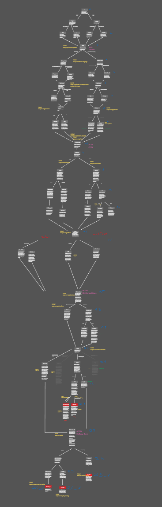
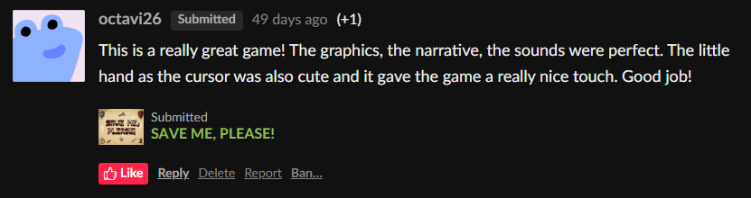
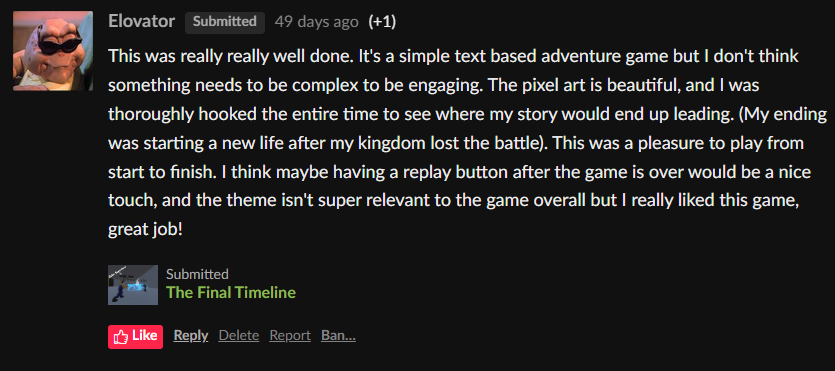
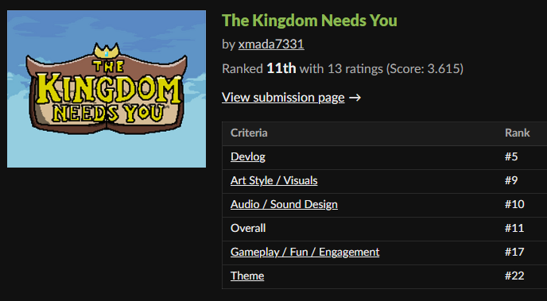

The Goed Ware Game Jam #16 finished on March 16th and here are my thoughts and some history after two months.
The leading theme for the jam was YOU CAN'T SAVE THEM ALL and it lasted for 10 days. The initial ideas is always the best part, looking back at what the game could have been and what it actually becone. Here's some of them:
I liked them a lot, but considering the short span of time and my artistic skill, I betted on something simpler, where I could use my already made assets and focus on mechanics and polish.
The winning idea for the game was quite simple: the player is a medic on a medieval battlefield, at the time of the siege of their kingdom. The game heavily focuses on narration and story, at the cost of mechanics and gameplay variety. You, the player are a medic who has to make important choices on the battlefield. That means healing one unit to sacrifice the other. Betraying the ones you served with for the greater good.
The gameplay is simple and repetitive, but ties well with engaging and short story. You are presented with a scenario (usually by talking with an NPC or by the game narrating current event). You are then presented with two choices that may or may not influence the future outcome, events and even endings. After each choice a new event happens and the proces repeats itself until the end.
I was trying to make sure that the story is engaging and the player actually would want to read it instead of speedrunning through it. Each event has its own scenery, narrating character and a possibility of branching out to a different storyline (there are moments where the story tree inevitably splits and based on the choice, player goes down a certain storyline). I also made sure the story is not too long for a few reasons.
First, I didn't want to plan a gigantic storyline tree to then end up having to cut it in half because of the time limit.
Second, like I said before, I didn't want the player to get bored. Shorter story means I can spend more time to write quality dialogue.
Third, I still had plenty of work, dialogue aside. And all these things needed polish too. So again, time management.
Alright, so I got the main ideas ready- I knew what the story would be about, I knew that I would want it in pixel style since the assets I got are made that way and I knew how the main mechanic would play out. That means I've got everything I need to make it, right? ...right?
Once again we come back to that old chinese saying 'last 10% of the game takes 90% of the time'. ...well maybe more like 70-30 in most of my cases, but I manage somehow. I think.
I had all the assets prepped up and ready, but I lacked the model for the player and potential NPCs. "No problem"- I thought to myself. "I'll scrap something together in Aseprite. A 32x32 character is simple to make. I've seen other do it so it must be easy.". Yeah. It wasn't. After wasting a good amount of time trying to hopelessly make a medival knight medic using various references I just gave up and started searching for any potential assets I might have missed.
And lo behold I found the perfect fit. A full spritesheet of medival armors, helmets, boots, heads, gloves, weapons, shields and accessories. Jackpot. The only thing I did in Aseprite in this project was a simple tileset for the castle in the background and some interface elements.
After importing all these to the engine, a smile started to form on my face because it finally started to look like a proper game. I dare say it started to look professional! So I started putting them all together, making different scenes, putting the dialogue in the right place, programming all the systems and the dialogue behaviour.
And my, oh my did it take long to properly program choice-based game with a branching storyline. I must have spent at least two days just getting it to work. Initially I wanted the player to collect things and being able to use them in the dialogue if needed. I also wanted to branch out into three choices instead of two, but that proved to be too big of a challenge for my skills, so I stuck to two. That made me reshape the storyline tree a little bit, but 90% was preserved.
The last touches for the game were as always animations and sound effects. Luckily, my asset library had just the thing. Not only music, but sound effects. I almost didn't have to edit any of them, they were so fitting already. And after the sound effects were added... Pure bliss. Finishing the game in one thing. But adding the sound to it adds a whole new depth and immersion and I think it's always my favourite part of finishing the game.
After the build was ready I worked on its itch.io page and published.
This game jam in particular had awesome side-events that would keep the participants engaged throughout the voting period.
There were prices for the best feedback and for the best devlog. I participated in both, played and rated many, many games and gave appropreiate feedback. A few days after publishing the game I started to work on the devlog. It's not as detailed as this one, but has better dating structure.
Click here if you would like to read it.
I did not win either of the side-events, but the feedback and reviews I published got proper appreciation. Congratulations to the actual winners.
The Kingdom Needs You finished on 11th place out of 59 entries, with Noah's Ark(s) taking the first place
I am very, very proud of this project and I think it raised the bar for me when it comes to polished, finished product. I don't feel like I want to add anything more to the game and that is a good feeling.



